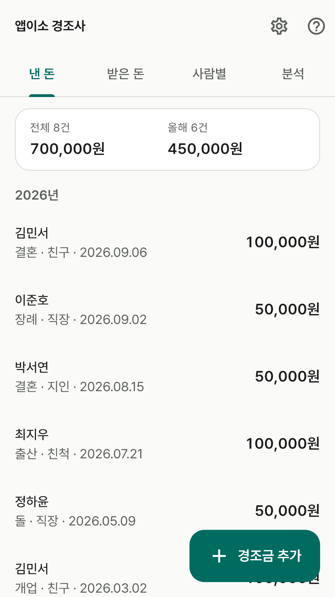
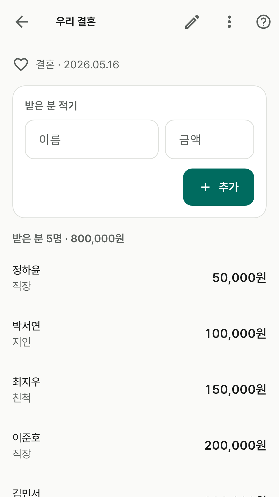
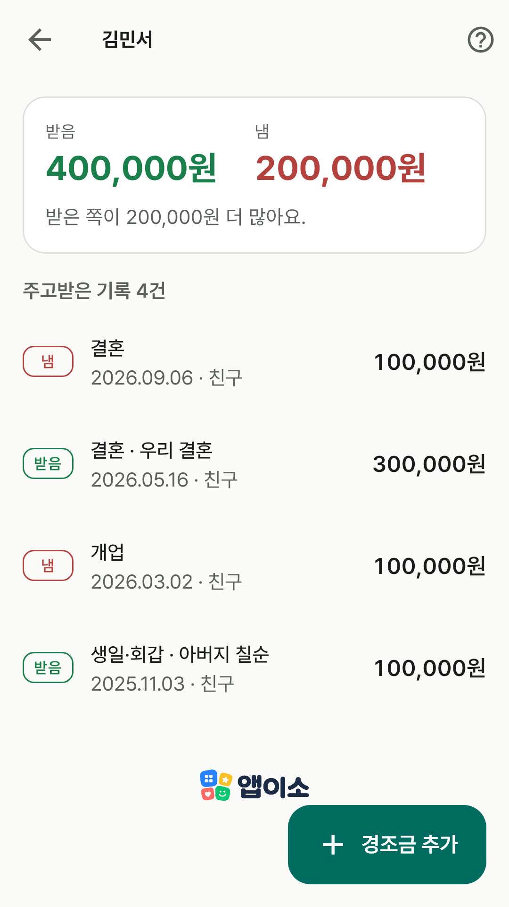
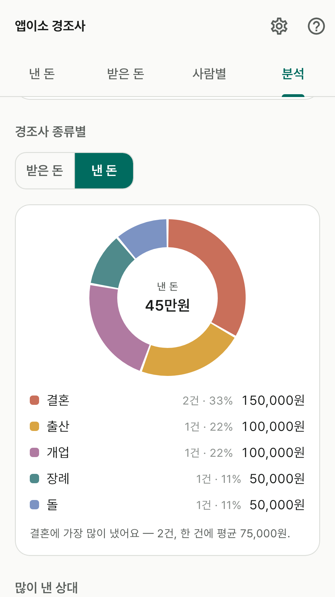
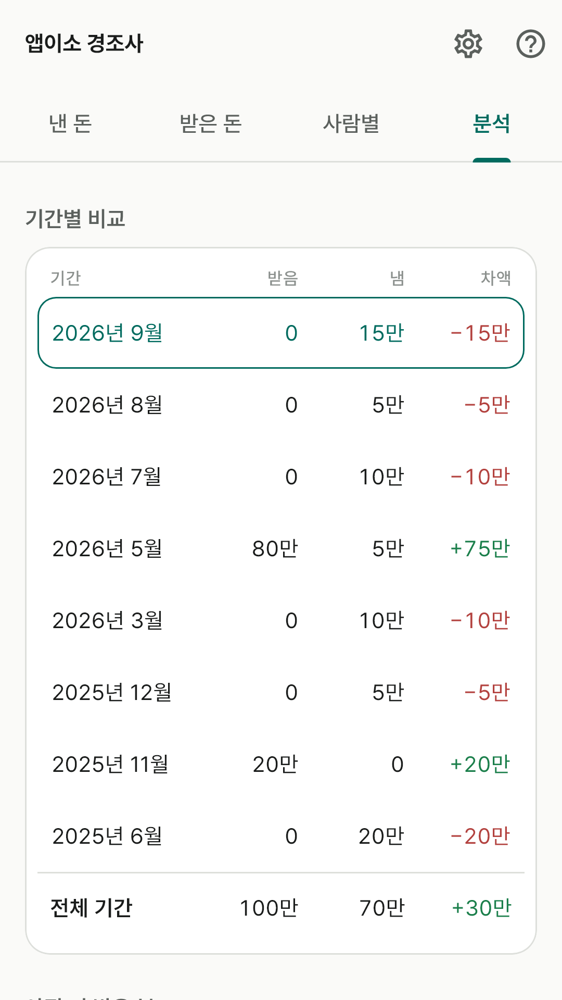
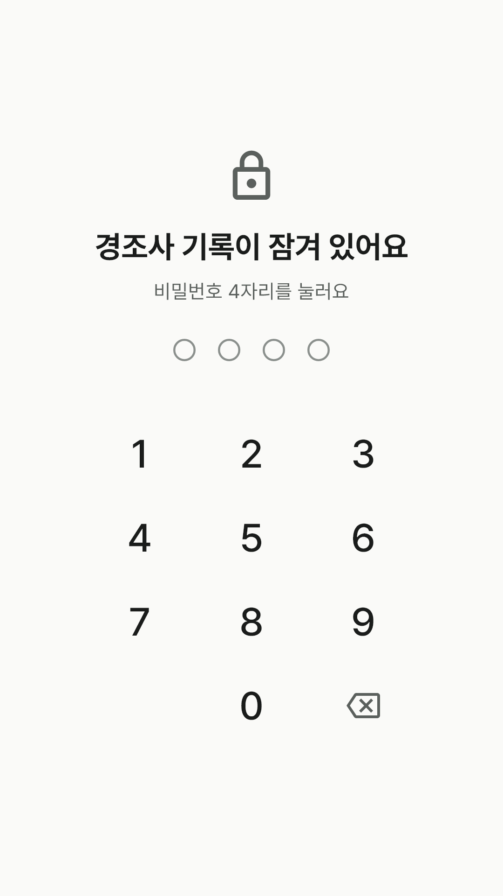

광고 없이 완전 무료입니다. 결제도, 로그인도, 계정도 없습니다.
인터넷 권한을 아예 요청하지 않아서 비행기 모드에서도 그대로 쓸 수 있습니다.
이런 걸 할 수 있어요
낸 경조금 — 언제, 누구에게, 어떤 일로(결혼·장례·출산·돌·생일·개업·기타),
얼마를 냈는지 적어 둡니다. 금액은 숫자로 직접 적고, 3만·5만·10만 같은 칩으로 한 번에 넣을 수도
있어요. 적은 금액은 "7.7만원"처럼 되읽어 줘서 0을 잘못 세는 실수를 막아줍니다.
받은 경조금 — 내 경조사(우리 결혼, 아버지 칠순 …)를 만들고 준 분들을
이름·금액만으로 한 명씩 쌓습니다. 한 명 적으면 이름 칸으로 바로 돌아와서 방명록이나 봉투를
그대로 옮겨 적기 좋아요.
사람별로 찾기 — 이름이 같은 기록을 한 사람으로 모아 받은 합계·낸 합계와
차이를 보여줍니다. "받은 쪽이 20만원 더 많아요" 한 줄이면 얼마를 낼지 정할 수 있어요.
경조금을 적는 자리에서도 이름만 넣으면 그 사람과 오간 기록이 바로 뜹니다.
분석 — 월별·연도별·전체로 받은 돈과 낸 돈, 차액을 나란히 놓은 표.
경조사 종류별 원그래프와 한 건 평균, 많이 주신 분, 그리고 전 기간을 통틀어
"아직 더 받은 분"까지 정리해 줍니다.
비밀번호·지문 잠금 — 원하면 숫자 4자리로 잠글 수 있고, 폰이 지원하면
지문·얼굴로도 열립니다. 걸기 전에는 아무것도 묻지 않고 바로 열려요.
앱 안에서는 이렇게 보여요

낸 경조금과 합계.

받은 분을 한 명씩 빠르게.

그 사람과 오간 전부.

어떤 일에 얼마나 썼는지.

월별·연도별로 견주기.

원하면 잠글 수 있어요.
화면에 보이는 이름과 금액은 기능을 설명하기 위한 예시입니다.
개인정보
이 앱은 개인정보를 수집하지 않습니다. 적어 넣은 내용은 휴대폰 안에만 저장되고
개발자에게 전송되지 않습니다. 자세한 내용은
개인정보처리방침을 확인해 주세요.
문의
버그 제보나 넣었으면 하는 기능이 있으면
appisoLabs@gmail.com 으로 알려주세요.
어떤 버전에서 생긴 일인지(앱 도움말 맨 아래에 적혀 있어요) 같이 적어주시면 도움이 됩니다.